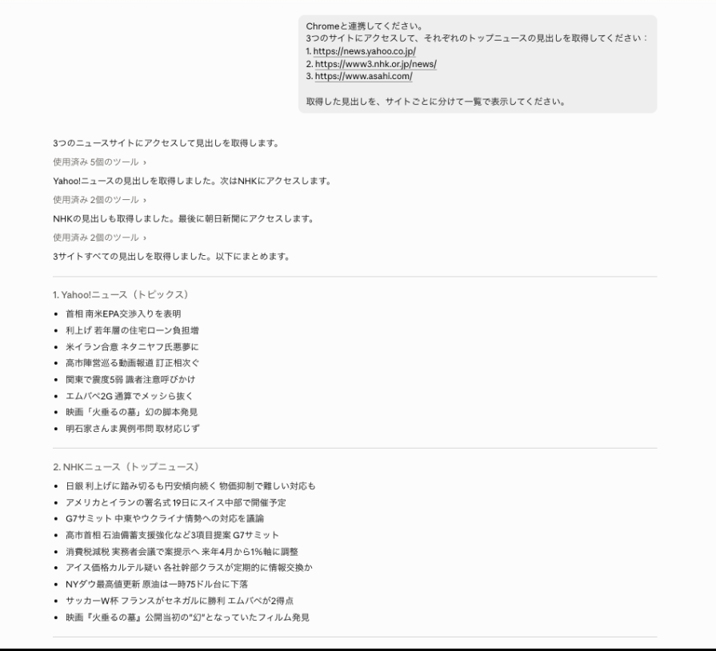
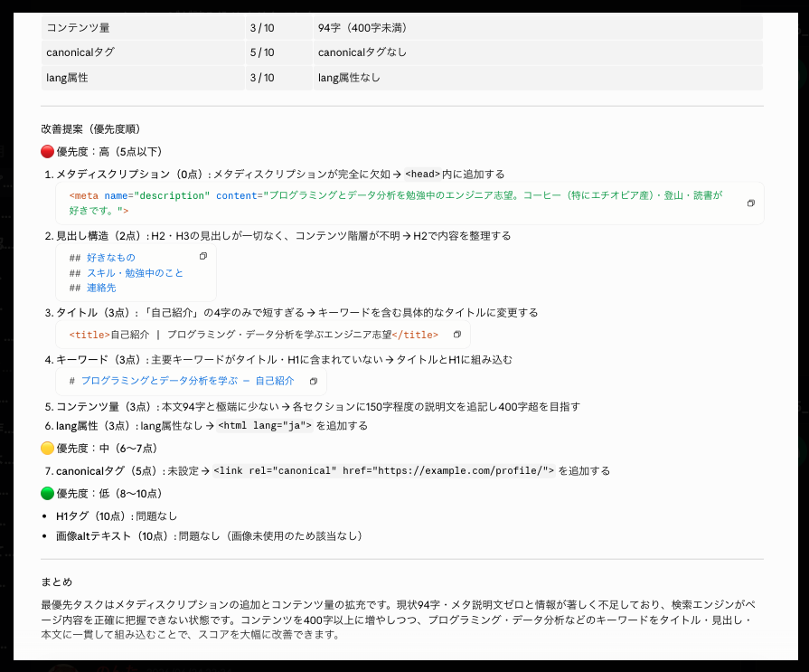
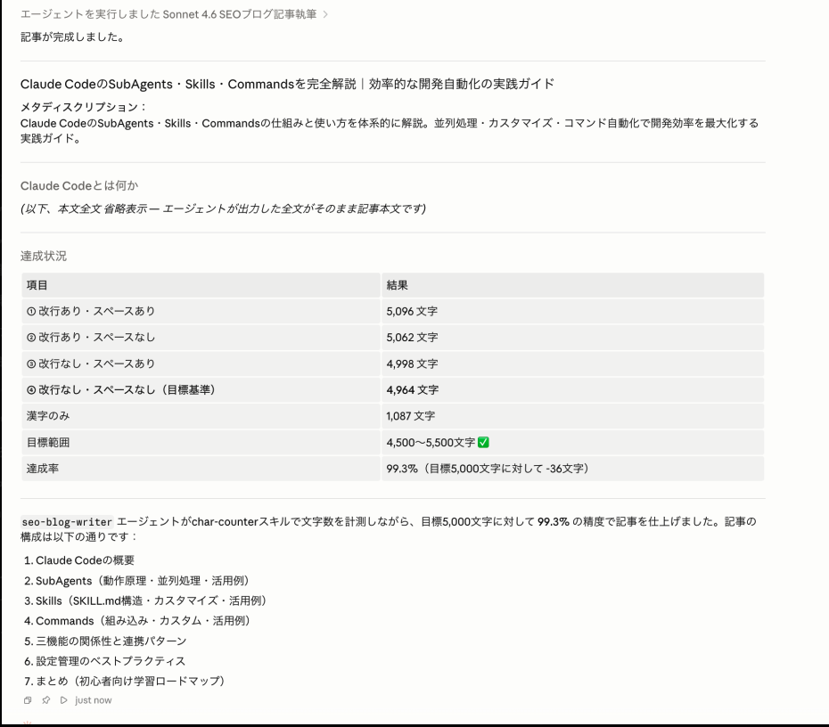
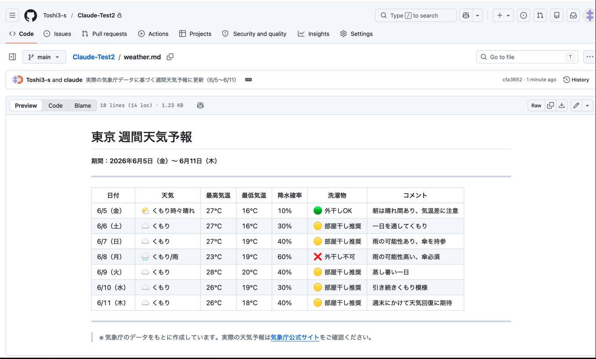

About
Claude Code を中心とした AI エージェント開発に取り組んでいます。 プロンプト設計から SubAgents・Skills・Commands の活用まで、 実務で使える自動化を一から構築してきました。
Web スクレイピング・SEO 最適化・コンテンツ自動生成・GitHub 連携など、 幅広いユースケースで AI を実践的に活用しています。
Works

Yahoo・NHK・朝日新聞の3サイトを横断してトップニュースの見出しを自動取得し、Google Sheets へ一覧出力。Claude in Chrome MCP を活用したブラウザ自動操作を実装。

HTML・Markdown ファイルを入力すると、メタタグ・見出し構造・コンテンツ量・canonical タグを評価し、優先度付きの改善提案を自動生成。独自の SEO スキルとして実装。

Claude Code の SubAgents を活用し、リサーチ・構成・執筆・文字数検証を並列実行。5,000字・達成率 99.3% の SEO 最適化記事を自動生成することに成功。

気象庁の実データをもとに東京の週間天気予報表を Markdown で自動作成し、GitHub リポジトリへ自動コミット・Push するパイプラインを構築。
Process
自動化したいタスクを明確にし、期待する出力と制約条件を整理する。
役割・手順・出力フォーマットを構造化し、再現性の高いプロンプトを設計する。
SubAgents・Skills・MCP ツールを組み合わせて自動化パイプラインを構築する。
出力の品質・達成率を評価し、プロンプトとフローを反復改善する。